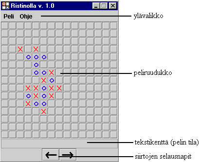
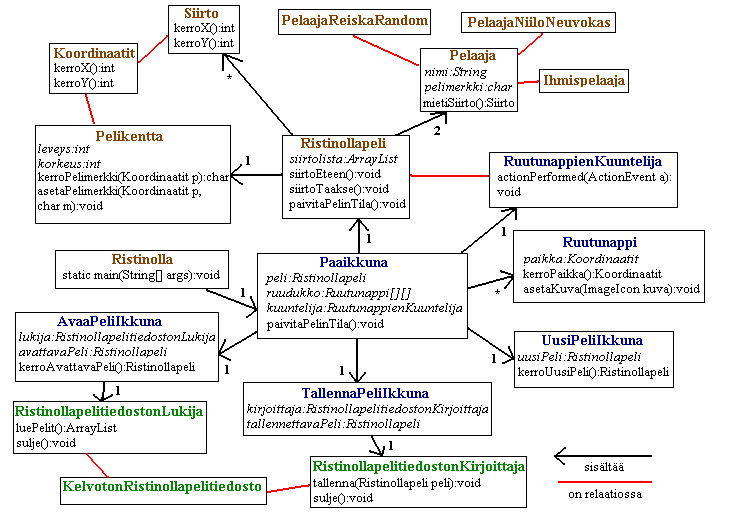

T-106.213 projektityön dokumenttiRistinolla Tuukka Sarvi (tsarvi@cc.hut.fi), 57679S, S I Päivitetty 8.1.2003 YleiskuvausToteuttamani peli on perinteinen ristinolla, jossa tavoitteena on saada aikaan viiden peräkkäisen rastin tai renkaan suora ruudukolle. Peli on pyritty tekemään siten, että se toteuttaa vaikean vaatimustason kriteerit. Peli toteuttaa ensisijaisesti tehtävänannon (c)-kohdan vaatimukset. Pelin tärkeimmät ominaisuudet (tehtävänantoa mukaillen) ovat seuraavat:
KäyttöohjeOhjelma käynnistetään tarvittavat luokkatiedostot sisältävässä hakemistossa komennolla: java Ristinolla. Tämän seurauksena ruutuun pitäisi avautua, käyttöjärjestelmästä riippuen, jotakuinkin alla olevan näköinen ikkuna.  Pelin pääikkunassa on kolme eri toimintokokonaisuutta: peliruudukko, siirtojen selausnapit ja ylävalikko. Peliruudukon ruutuja painamalla pelaaja(t) voivat tehdä haluamansa siirron. Kun jotain ruutua painaa, sen paikalle ilmestyy joko rasti tai rengas, riippuen siitä kumpi pelaaja oli vuorossa. Tämän lisäksi ruutu menee disabled-tilaan, jolloin sitä ei voi enää painaa saman pelin aikana. Kun pelaaja on jotain ruutua painamalla tehnyt siirtonsa, siirtyy vuoro seuraavalle pelaajalle. Siirtojen selausnapit, eli ikkunan alareunassa olevat kaksi nuoli-ikoneilla varustettua nappia, mahdollistavat siirtojen selaamisen eteen- ja taaksepäin. Nuoli vasemmalle siirtää pelitilannetta yhden siirron taaksepäin ja nuoli oikealle siirtää pelitilannetta vastaavasti yhden siirron eteenpäin. Käyttäjän selatessa siirtoja taaksepäin peliruudukon napit menevät disabled-tilaan estäen siirtojen tekemisen muualla kuin nykyisessä pelitilanteessa. Ylävalikossa on kaksi osaa: Peli ja Ohje. Peli-kohta sisältää valinnat: Uusi peli, Avaa peli, Tallenna peli ja Lopeta. Ohje sisältää vain yhden valinnan: Tietoja (kertoo yleisiä tietoja pelistä). Valitsemalla Uusi peli, käyttäjä voi aloittaa uuden ristinollapelin. Valinnan seurauksena näytölle avautuu uusi ikkuna, jossa voi muuttaa luotavan pelin asetuksia. Muutettavia asetuksia ovat rasti- ja rengaspelaajan tyyppi sekä pelikentän leveys ja korkeus. Pelaajatyyppejä on kolme: Ihminen, Reiska Random ja Niilo Neuvokas. Ihminen edustaa ihmispelaajaa, Reiska Random täysin satunnaisesti pelaavaa tekoälyä ja Niilo Neuvokas kohtalaisesti pelaavaa tekoälyä. Leveys- ja korkeuskentät määrittävät pelikentän koon. Minimissään kenttien arvojen on oltava 5 ja maksimissaan 50. Avaa peli-valinta käynnistää ruudulle hakemistopuun sisältävän ikkunan. Käyttäjän valittua haluamansa tiedoston, ohjelma yrittää avata sen. Jos avaaminen onnistuu, tulostuu näytölle lista, joka sisältää tiedostoon tallennetut pelit. Kun käyttäjän on listasta valinnut haluamansa pelin ja painanut Avaa-nappia, sulkeutuu avaamisikkuna ja valitun pelin tilanne viimeisen siirron kohdalta tulostuu pääikkunaan. Tallenna peli-valinnalla pääikkunassa oleva peli voidaan tallettaa haluttuun tiedostoon. Valinnan seurauksena avautuu hakemistopuun sisältävä ikkuna, josta käyttäjä voi valita tallennustiedoston. Jos valittu tiedosto on toimiva ristinollapelitiedosto, tai jos käyttäjä erillisen välikysymyksen jälkeen valitsee tallettavansa pelin tiedostoon siitä huolimatta, että se ei ole toimiva ristinollapelitiedosto, tulostuu näytölle ikkuna, jossa kysytään pelaajien nimiä. Käyttäjän muutettua nimet haluamansa muotoon ja valittua Tallenna, ohjelma tallettaa pelin tiedostoon. Lopeta-valinta yksinkertaisesti sulkee pelin. Pääikkunassa on yllä mainittujen toimintojen lisäksi tekstikenttä, joka kertoo pelin tilan. Pelin ollessa käynnissä kenttä on tyhjä, muulloin siinä lukee, pelin lopputuloksesta riippuen "Rasti voittaa", "Rengas voittaa" tai "Tasapeli". Ohjelman rakennePeli voidaan jakaa sisältämiensä luokkien perusteella kolmeen osakokonaisuuteen: pelin tietorakenteet, tiedostonkäsittely ja käyttöliittymä. Pelin tietorakenteetPelin tietorakenteet osakokonaisuus sisältää seuraavat luokat: Koordinaatit, Siirto, Pelikentta, Pelaaja, Ihmispelaaja, PelaajaReiskaRandom, PelaajaNiiloNeuvokas, Ristinollapeli ja Ristinolla. Koordinaatit-luokka kuvaa tason koordinaatteja (x,y) ja sisältää yksinkertaisia metodeja niiden manipuloimiseksi. Siirto-luokka on Koordinaatit-luokan triviaali aliluokka, joka kuvaa yhtä rastin tai renkaan paikkaa, eli yhtä ristinollapelin siirtoa. Erillisen Siirto-luokan luominen pelin siirtojen kuvaamiseen, koordinaattiparien käyttämisen sijasta, on perusteltua, koska se auttaa selkeyttämään ohjelmakoodia, erottaen ne kohdat, joissa on kyse koordinaateista niistä, joissa on kyse jonkun pelaajan siirroista. Pelikentta kuvaa ruudukkoa, jossa ristinollapeli pelataan. Luokassa kutakin ruutua edustaa char-arvo, joka voi olla 'x', 'o' tai ' ' vastaten rastia, rengasta tai tyhjää ruutua. Itse ruudukkoa edustaa char[][]-taulukko. Olisi ollut mahdollista luoda erillinen luokka kuvaamaan yhtä pelikentän ruutua, mutta tässä tapauksessa char-arvojen käyttö on toimivampi ratkaisu, koska se mahdollistaa peliruudukon rivien, sarakkeiden ja diagonaalien suoraviivaisen muuttamisen String-olioiksi - seikka, johon lähes kaikki pelin algoritmit nojaavat. Pelikentta-luokka sisältää muun muassa metodit ruutujen arvojen tutkimiseksi ja asettamiseksi sekä joitain erikoistuneempia metodeja. Pelaaja on abstrakti luokka, joka kuvaa pelaajan yleisiä ominaisuuksia (nimi, pelimerkki, ym.). Se sisältää muutamia valmiiksi toteutettuja metodeja ja abstraktin metodin mietiSiirto():Siirto, joka sen aliluokkien täytyy toteuttaa. Juuri metodin mietiSiirto():Siirto erilainen toteutus mahdollistaa eri pelaajatyyppien luomisen. Ihmispelaaja, PelaajaReiskaRandom ja PelaajaNiiloNeuvokas ovat Pelaaja-luokan aliluokkia. Niistä kukin määrittää oman toteutuksensa mietiSiirto()-metodille. Ristinollapeli-luokka kuvaa yhtä ristinollapeliä (pelaajat, pelikenttä, jne.) ja on pelirungon keskeisin luokka. Se vastaa pelaajien ja pelikentän kommunikaatiosta sekä pelin rungon puolesta siitä, että käyttäjä voi halutessaan kelata siirtoja eteen ja taakse pelikentän päivittyessä vastaavasti. Ristinollapeli-luokka sisältää metodit paivitaPelinTila():void ja kerroPelinTila():int, joiden avulla saadaan tietoon pelattavan pelin nykyinen tila (käynnissä, rasti voittaa, rengas voittaa tai tasapeli). Luokka Ristinolla edustaa koko peliä ja sisältää pelkän main()-metodin. Sen tehtävä rajoittuu pelin käyttöliittymän käynnistämiseen. TiedostonkäsittelyTiedostonkäsittely sisältää luokat: RistinollapelitiedostonLukija, RistinollapelitiedostonKirjoittaja ja KelvotonRistinollapelitiedosto. RistinollapelitiedostonLukija-luokan avulla voidaan lukea ristinollapelitiedostoja (tiedoston muoto on selitetty kohdassa Tietorakenteet). Sen tärkein metodi on luePelit():Arraylist, joka antaa palautusarvona ArrayList-olion, joka sisältää tiedostossa olevat pelit Ristinollapeli-oliona. RistinollapelitiedostonKirjoittaja-luokka mahdollistaa pelien tallentamisen tiedostoon. Metodilla tallenna(Ristinollapeli peli):void, haluttu peli voidaan tallentaa tiedoston loppuun. KelvotonRistinollapelitiedosto on Exception-luokan aliluokka, joka kuvaa poikkeustilanteita, joissa käsiteltävän tiedoston muoto on virheellinen. KäyttöliittymäKäyttöliittymä sisältää luokat: Paaikkuna, Ruutunappi, RuutunappienKuuntelija, UusiPeliIkkuna, AvaaPeliIkkuna ja TallennaPeliIkkuna. Tämän lisäksi edellä mainittuihin luokkiin sisältyy joukko sisäluokkia, jotka ovat tapahtumankuuntelijoita. Paaikkuna on pelin toiminnan kannalta tärkein luokka. Se vastaa pelin toimimisesta käyttäjän komentojen mukaisesti, ja sen alaisuudessa toimivat kaikki muut pelin luokat Ristinolla-luokkaa lukuun ottamatta. Käyttöliittymässä Paaikkuna-luokka kuvaa pelin pääikkunaa ja perii JFrame-luokan. Se sisältää nappiruudukon, joka koostuu Ruutunappi-olioista, 'Siirto eteen'- ja 'Siirto taakse'- napit, tekstikentän ja ylävalikon. Paaikkuna-luokan tärkein metodi on paivitaPelitilanne():void, joka päivittä pelin tilan ja graafisen käyttöliittymän komponentit uutta tilannetta vastaaviksi ja siirtää vuoron seuraavalle pelaajalle kutsumalla Pelaaja-olion mietiSiirto():Siirto-metodia. Ruutunappi-luokka on JButton-luokan aliluokka ja kuvaa käyttöliittymässä yhtä ristinollaruudukon nappia. Pelkkä valmiin JButton-luokan käyttö kuvaamaan ruudukon nappeja ei riitä, koska nappien on osattava kertoa sijaintinsa ruudukossa, jos tarve vaatii. Suurimpana erona JButton-luokkaan onkin se, että jokainen Ruutunappi-olio sisältää tiedon sen omasta paikasta peliruudukossa. RuutunappienKuuntelija-luokka toteuttaa ActionListener-rajapinnan ja vastaa peliruudukon Ruutunappien painallusten kuuntelemisesta Paaikkuna-luokan alaisuudessa. Se kuuntelee samalla kertaa kaikkia ruudukon nappeja ja vastaa tarvittavien metodien, kuten ja Pelaaja-luokan siirra()-metodin ja Paaikkuna-luokan paivitaPelitilanne()-metodin, kutsumisesta, jos jotain ruudukon nappia painetaan. Syy minkä takia Ruutunappien painallusten kuuntelemista ei voi toteuttaa sisäluokilla, vaan on luotava erillinen tapahtumankuuntelija, on se, että peliruudukon koko vaihtelee pelistä toiseen. UusiPeliIkkuna-luokka, joka on JDialog-luokan aliluokka, kuvaa ikkunaa, jossa käyttäjä syöttää uuden pelin tiedot tietokoneelle. Paaikkuna-luokka luo uuden UusiPeliIkkuna-olion ja pistää sen näkyviin siinä tapauksessa, että käyttäjä on valikosta valinnut kohdan Uusi peli. UusiPeliIkkuna luo käyttäjän syötteen perusteella uuden Ristinollapeli-olion ja antaa sen Paaikkuna-luokalle jatkotoimenpiteitä varten. AvaaPeliIkkuna edustaa ikkunaa, jossa käyttäjä voi valita tiedoston sisältämistä peleistä mieleisensä avattavaksi. JFileChooser-luokan ilmentymällä siis valitaan haluttu tiedosto, jonka jälkeen se lähetetään AvaaPeliIkkuna-oliolle, joka sisältää RistinollapeliLukija-olion, joka vastaa tiedoston lukemisesta. AvaaPeliIkkuna-olio tulostaa tiedoston pelit näytölle, ja käyttäjän tehtyä valintansa, se lähettää valitun Ristinollapeli-olion sitä kutsuneelle Paaikkuna-oliolle. AvaaPeliIkkuna perii JDialog-luokan. TallennaPeliIkkuna kuvaa ikkuna, jossa käyttäjä, kirjoitettuaan ensin tekstikenttiin pelaajien nimet, voi tallentaa käynnissä olevan pelin. TallennaPeliIkkuna-luokka sisältää RistinollapelitiedostonKirjoittaja-olion, jonka avulla tiedostoon kirjoittaminen tapahtuu. TallennaPeliIkkuna perii JDialog-luokan. Alla olevassa kuvassa luokkarakenne on esitetty UML-kaavion avulla (ruskea = pelin tietorakenteet, sininen = käyttöliittymä ja vihreä = tiedostonkäsittely).  AlgoritmitPelissä on käytetään kahta algoritmia, jotka ovat: pelin lopputuloksen määrittäminen ja tietokoneen tekoäly. Pelin lopputuloksen määrittäminenPelin lopputuloksen määrittäminen alkaa sillä, että peliruudukon rivit, sarakkeet ja diagonaalit (kahteen eri suuntaan) muutetaan merkkijonoiksi. Näistä merkkijonoista etsitään ensin viiden peräkkäisen rastin- ja renkaan jonoa. Mikäli sellainen löytyy julistetaan toinen pelaajista voittajaksi. Sen tutkimiseksi onko peli tasapeli etsitään riveiltä, sarakkeilta ja diagonaaleilta ensin viiden peräkkäisen tyhjän merkin jonoa. Jos sellainen löytyy, on ainakin teoriassa vielä mahdollista, että toinen pelaajista saa viiden suoransa valmiiksi (eli peli ei ole vielä päättynyt). Mikäli viiden tyhjän merkin jonoa ei löydy, siirrytään seuraavaan vaiheeseen, jossa vuorotellen korvataan tyhjät ruudut rasteilla ja renkailla ja tutkitaan, että muodostuuko johonkin viiden suoraa. Mikäli viiden suoraa ei kummankaan pelaajan tapauksessa muodostu, on peli tasapeli. Tietokoneen tekoälyPelissä on kaksi tietokonevastustajaa: Reiska Random ja Niilo Neuvokas. Reiska Random valitsee siirtonsa satunnaisesti ja ei siis ole varsinaisesti tekoäly. Niilo Neuvokas käyttää siirron löytämiseen merkkiyhdistelmien tunnistamiseen ja niiden arvottamiseen perustuvaa algoritmia. Algoritmin perusidea on antaa eri merkkiyhdistelmille (esim. "_xxx_" ja "xx__") niiden tavoiteltavuutta kuvaavat kokonaislukuarvot eli hyötyarvot. Mitä suurempi hyötyarvo sen parempi ja tavoiteltavampi yhdistelmä. Koko algoritmi voidaan jakaa, alemman tason toiminnoista ylempiin liikuttaessa, seuraaviin osa-algoritmeihin: yksittäisen siirron hyötyarvon määrittäminen, hyötyarvomatriisin laskeminen ja siirron valitseminen. Yksittäisen siirron hyötyarvoa määritettäessä muutetaan ensin siirtoa vastaavan ruudun rivi, sarake ja diagonaalit - siirron vaikutus alue - merkkijonoiksi tietylle etäisyydelle asti (esim. viiden ruudun päähän). Tämän jälkeen etsitään saaduista merkkijonoista yhdistelmiä, kuten "MMMM_", "_MM__" tai "__M__" (M = pelaajan merkki). Aina kun joku ennalta määritetyistä yhdistelmistä löytyy, lisätään sitä vastaava hyötyarvo muuttujaan, joka edustaa kokonaishyötyarvoa. Tällä tavalla lasketaan tilanteelle hyötyarvot ennen ja jälkeen merkin lisäyksen katsoen tilannetta vuoroin omalta, vuoroin vastustajan kannalta. Ottamalla erotus alku- ja lopputilanteiden hyötyarvojen välillä saadaan hyötyarvon muutos. Hyötyarvon muutos lasketaan molempien pelaajien kannalta erikseen. Tämän jälkeen siirron hyötyarvo saadaan yhtälöstä: (hyötyarvon muutos omalta kannalta) - (hyötyarvon muutos vastustajan kannalta). Seuraava askel algoritmissa on hyötyarvomatriisin laskeminen. Hyötyarvomatriisi on kaksiulotteinen kokonaislukutaulukko, joka on pelikentän kokoinen, ja joka sisältää jokaista mahdollista siirtoa vastaavat hyötyarvot. Hyötyarvomatriisi muodostetaan laskemalla jokaiselle mahdolliselle siirrolle hyötyarvo ja sijoittamalla se siirtoa vastaavaan kohtaan kaksiulotteisessa taulukossa. Algoritmin viimeinen vaihe on siirron valitseminen. Siinä lasketaan hyötyarvomatriisi omalle siirrolle nykyisessä tilanteessa ja hyötyarvomatriisi vastustajan siirrolle nykyisessä tilanteessa. Kun omasta - ja vastustajan hyötyarvomatriisista valitaan suurimmat arvot saadaan hyökkäyshyöty ja puolustushyöty. Hyökkäyshyöty kertoo suurimman hyödyn, joka seuraa oman pelin rakentamisesta; puolustushyöty kertoo vastaavasti suurimman hyödyn joka koituu vastustajan siirron estämisestä. Koska vastustaja uhkaa tehdä siirtonsa vasta vuoron päästä, ei hyökkäyshyöty ja puolustushyöty eivät ole suoraan verrattavissa. Tämän tosiasian huomioon ottamiseksi tekoälyyn on sisällytetty vakio PUOLUSTUSSIIRRON_HEIKENNYSKERROIN (väliltä 0...1), jolla puolustushyöty kerrotaan, jotta siitä saataisiin vertailukelpoinen hyökkäyshyötyyn nähden. Kun puolustushyöty on kerrottu heikennyskertoimella, suoritetaan tekoälyalgoritmin viimeinen vaihe, jossa saatua puolustushyötyä verrataan hyökkäyshyötyyn. Jos puolustushyöty on suurempi valitaan siihen johtanut siirto, jos taas hyökkäysetu on suurempi valitaan sitä vastaava siirto. On olemassa yksi poikkeustilanne, jolloin tekoäly ei käytä yllä kuvattua algoritmia siirron määrittämiseen. Tämä tilanne on pelin alku, jolloin pelikenttä on tyhjä eikä siitä voi saada mitään tietoa. Tässä tapauksessa tekoäly arpoo satunnaisen siirron pelikentän keskikohdan läheltä. TietorakenteetPelin tärkein tietorakenne on peliruudukko, joka on toteutettu kaksiulotteisena char-taulukkona. Näin voidaan tehdä, koska pelikentän leveys ja korkeus eivät muutu pelin aikana. Dynaamisia tietorakenteita käytetään ohjelmassa yhteyksissä, joissa ei ole tietoa alkioiden kokonaismäärästä. Tällöin on poikkeuksetta tukeuduttu Javan ArrayList-luokkaan. Ainoa itse luotu tietorakenne on pelissä käsiteltävien ristinollapelitiedostojen muoto. Ristinollapelitiedosto on tekstitiedosto ja sen tieto on niissä esitetty seuraavalla tavalla: rastipelaajan nimi rastipelaajan tunniste (määrittää minkä tyyppinen pelaaja on kyseessä - ihminen vai joku tietokonepelaajista) rengaspelaajan nimi rengaspelaajan tunniste pelikentän leveys pelikentän korkeus (1,1) (rastin 1. siirto) (2,4) (renkaan 1. siirto) (3,5) ..... (rastin ja renkaan siirtoja vuorotellen) ---------------- (Erotinrivi, joka erottaa kaksi peliä toisistaan) rastipelaajan nimi (jossain toisessa pelissä, joka on tallennettu samaan tiedostoon) ..... jne.
Yksi ristinollapelitiedosto voi siis sisältää mielivaltaisen määrän pelejä, kunhan ne on kuvattu yllä esitetyssä muodossa. Poikkeamat suunnitelmastaSuurin poikkeus alkuperäisestä suunnitelmasta on se, että Ristinolla-luokasta ei tullut pelin luokkakokonaisuuden kannalta keskeisin luokka. Alkuperäisessä suunnitelmassa juuri sen piti olla muut luokat yhteen nivova rakennuspala. Sen tehtäväksi lopullisessa versiossa jäi vain Paaikkuna-olion luominen ja sen sen laittaminen ruudulla näkyväksi. Pelirungon keskeisimmäksi luokaksi nousi Ristinollapeli. Koko pelin pääluokaksi nousi käyttöliittymän keskeisin osa Paaikkuna-luokka. Syy luokkarakenteen muuttumiseen on se, että Ristinolla-luokkaa ei tarvittu pelirungossa, eikä myöskään käyttöliittymän puolella. Suunnitelmaa tehdessä allekirjoittaneelle ei ollut selvää miten graafinen käyttöliittymä rakennetaan Javassa. Jälkiviisaasti ajatellen se, että käyttöliittymän pääluokka Paaikkuna nousi pelin osakokonaisuudet yhdistäväksi luokaksi, on varsin luontevaa; Javalla käyttöliittymää luotaessa se useimmiten toimivin ratkaisu. Allekirjoittaneen kokemuksen puute graafisen käyttöliittymän laatimisesta näkyi edellä mainitun seikan lisäksi myös siinä, että valmiissa ohjelmassa on huomattavasti enemmän käyttöliittymään liittyviä luokkia kuin oli suunniteltu. Työn edetessä täytyi luoda luokat, jotka mahdollistivat käyttöliittymän puolelta mm. pelien lataamisen ja tallentamiseen, sekä kuuntelijaluokka ja erillinen Ruutunappi-luokka, jotka tekivät mahdolliseksi peliruudukon toiminnan. Tekoälyn laatiminen eteni suurelta osin alkuperäisen suunnitelman suuntalinjoja pitkin, mutta ei täysin. Alkuperäisessä suunnitelmassa tekoälyn yhteydessä tarvittavat hyötyarvot toteutettiin desimaalilukuina. Lopullisessa ohjelmassa ne olivat kuitenkin kokonaislukuja. Tämä muutos tehtiin sen takia, että kokonaislukujen käsittely käy tietokoneelta huomattavasti nopeammin kuin liukulukujen. Suunniteltuun tiedostomuotoon jouduttiin tekemään muutama muutos. Pelaajille piti lisätä erilliset tunnisteet, jotta saadaan tietoon pelaajan tyypit. Tiedostomuoto mahdollistaa lopullisessa versiossa myös monen pelin tallentamisen samaan tiedostoon, toisin kuin suunnitelmassa. Aikataulussa ei täysin pysytty, koska oli opeteltava paljon uutta asiaa, ja koska dokumentin kirjoittamiseen ja viimeistelyyn kului yllättävän paljon aikaa. Työntekoon käytetty tuntimäärä oli 8h enemmän kuin suunnitelmassa, eli yhteensä 80h. Arvio lopputuloksestaOlen kokonaisuutena hyvin tyytyväinen saavuttamaani lopputulokseen. Ohjelma toteuttaa mielestäni tehtävänannon määrittelemät kriteerit. Graafisesta käyttöliittymästä tuli selkeä ja käytettävyydeltään siedettävä, vaikka en käyttäjäystävällisyyttä ensisijaisesti lähtenytkään tavoittelemaan. Tietokoneen tekoälystäkin tuli yllättävän hyvä - se pystyy ajoittain pistämään keskivertopelaajan (tai ainakin minut) tiukoille. Käyttämääni luokkarakenteeseenkin olen tyytyväinen, enkä muuttaisi mitään, jos työ pitäisi aloittaa alusta. Peli on helposti laajennettavissa vaikkapa uusilla tietokonevastustajilla. Uuden tietokonevastustajan luomiseksi käyttäjän täytyy vain määritellä uusi toteutus Pelaaja-luokan mietiSiirto()-metodille. Kaiken kaikkiaan uskon hyvän luokkarakenteen eheyden olevan ohjelmoinnin ohella tehdyn jatkuvan suunnittelun tulos. On ohjelmassa kuitenkin löydettävissä erinäisiä puutteita. Puutteita löytyy lähinnä käyttöliittymän puolelta, jossa esimerkiksi, peliä avattaessa tai tallennettaessa avautuva, Javan Swing luokkakirjastossa valmiiksi toteutettu, tiedoston valitsija on englanninkielinen, vaikka muu käyttöliittymä on toteutettu suomeksi. Olisi myös ollut mahdollista ja käyttäjän kannalta mukavaa, tiedoston valitsijan yhteyteen olisi luotu ns. tiedostofiltteri .xo-päätteisille tiedostoille ristinollapelitiedostojen löytämisen helpottamiseksi. Itse koen pelin suurimmaksi puutteeksi, jos peliä ei tarkastella arvostelukriteerien valossa, riittämättömän tietokonevastustajan. Suuri parannus olisi muun muassa se, että tietokone analysoisi tilannetta myös kun käyttäjä miettii omaa siirtoaan - tämän voisi toteuttaa Javan säikeillä. Tulevaisuudessa aionkin, jos pelin kehittämistä jatkan, panostaa tekoälyalgoritmin kehittelyyn.
ViitteetKirjallisuus:
WWW-sivut:
Liitteet |